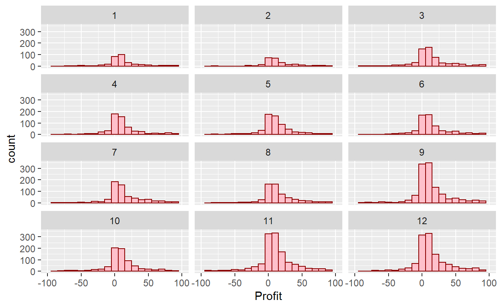

Module objectives
Demonstrate knowledge of what makes an effective visualization
Demonstrate knowledge of use cases for visualizations
Demonstrate how to create basic visualizations and dashboards
PWC: What is required to do data analysis?

Visual analysis Why is it important?
Using simple graphical information to gain insight and solve real-world (business) problems
The purpose of information visualization is to help us think by assisting memory and representing data in ways that our brain could easily comprehend
Visualizing datasets side-by-side allows us to make immediate comparisons
Charting measures over time help us understand behavior trends
Dashboards allow us to see data from many perspectives at once to start to find reasons for trends or anomalies
Interactive and interesting
What is a dashboard?
A dashboard is a business intelligence management tool used to determine performance and progress towards business goals. Successful dashboards should have:
Proper Metrics
Relevant to the past, present, or future
Should be actionable
Executive Support
Buy-in should come from the top
Should be viewed as critical decision support tools
Simplicity
Users should not need a lengthy manual to understand the information presented
Information should be communicated in a straight forward way
Using R for Visualizations
The grammar of graphics
The specific content largely comes from ModernDive and R for Data Science.
We start with a discussion of a theoretical framework for data visualization known as the grammar of graphics. This framework serves as the foundation for the ggplot2 package which well use extensively in this chapter. Think of how we construct and form sentences in English by combining different elements, like nouns, verbs, articles, subjects, objects, etc. We cant just combine these elements in any arbitrary order; we must do so following a set of rules known as a linguistic grammar. Similarly to a linguistic grammar, the grammar of graphics defines a set of rules for constructing statistical graphics by combining different types of layers. This grammar was created by Leland Wilkinson (Wilkinson 2005) and has been implemented in a variety of data visualization software platforms like R, but also Plotly and Tableau.
Components of the grammar In short, the grammar tells us that:
A statistical graphic is a mapping of data variables to aesthetic attributes of geometric objects.
A statistical graphic is a mapping of data variables to aesthetic attributes of geometric objects.
Specifically, we can break a graphic into the following three essential components:
data: the dataset containing the variables of interest. geom: the geometric object in question. This refers to the type of object we can observe in a plot. For example: points, lines, and bars. aes: aesthetic attributes of the geometric object. For example, x/y position, color, shape, and size. Aesthetic attributes are mapped to variables in the dataset. You might be wondering why we wrote the terms data, geom, and aes in a computer code type font. Well see very shortly that well specify the elements of the grammar in R using these terms. However, lets first break down the grammar with an example.
Graph Introduction
ggplot(data = AnnualCompanyData, mapping = aes(x = NetIncome, y = LongtermDebt)) +
geom_point()
#line graph..
linegraph1<-AnnualCompanyData
ggplot(data=linegraph1,mapping = aes(x=FiscalYear,y=TotalAssets))+geom_line()
linegraph2<-AnnualCompanyData%>%
filter(CompanyName=="APPLE INC")
ggplot(data=linegraph2,mapping = aes(x=FiscalYear,y=TotalAssets))+geom_line()
linegraph3<-AnnualCompanyData%>%
group_by(FiscalYear)%>%
summarise(mean_TotalAssets=mean(TotalAssets,na.rm=TRUE))
ggplot(data=linegraph3,mapping = aes(x=FiscalYear,y=mean_TotalAssets))+geom_line()
ggplot(data=AnnualCompanyData,mapping = aes(x=NetIncome,fill=factor(FiscalYear)))+geom_histogram(position = "dodge")
ggplot(data=AnnualCompanyData,mapping = aes(x=NetIncome,y=factor(FiscalYear)))+geom_boxplot()

ggplot2 package
we will use the ggplot2 package for data visualization, which is an implementation of the grammar of graphics for R (Wickham, Chang, et al.2021). As we noted earlier, a lot of the previous section was written in a computer code type font. This is because the various components of the grammar of graphics are specified in the ggplot() function included in the ggplot2 package. For the purposes of this class, well always provide the ggplot() function with the following arguments (i.e., inputs) at a minimum:
The data frame where the variables exist: the
dataargument.The mapping of the variables to aesthetic attributes: the
mappingargument which specifies theaesthetic attributes involved.
After weve specified these components, we then add layers to the plot using the + sign. The most essential layer to add to a plot is the layer that specifies which type of geometric object we want the plot to involve: points, lines, bars, and others. Other layers we can add to a plot include the plot title, axes labels, visual themes for the plots, and facets
Lets get some more data:
This loads data directly from my GitHub
library(curl)
load(curl("https://raw.githubusercontent.com/Professor-Hunt/ACC3053/main/data/Orders_Data.Rda"))
load(curl("https://raw.githubusercontent.com/Professor-Hunt/ACC3053/main/data/People_Data.Rda"))
load(curl("https://raw.githubusercontent.com/Professor-Hunt/ACC3053/main/data/Returns_Data.Rda"))
Make sure you load the proper libraries:
First Steps:
Lets answer a question: What is the relationship between Sales and Profit?
Creating the plot:
ggplot(data = Orders_Data) +
geom_point(mapping = aes(x = Profit, y = Sales))

# ggplot(data = Orders_Data,aes(x = Profit, y = Sales)) +
# geom_point()
This plot is not as clear as we expected. Sales is positively related to Profit, but it is not as strong as you might have expected.
With ggplot2, you begin a plot with the function ggplot(). ggplot() creates a coordinate system that you can add layers to. The first argument of ggplot() is the dataset to use in the graph.
You complete your graph by adding one or more layers to ggplot(). The function geom_point() adds a layer of points to your plot, which creates a scatterplot. ggplot2 comes with many geom functions that each add a different type of layer to a plot.
Each geom function in ggplot2 takes a mapping argument. This defines how variables in your dataset are mapped to visual properties. The mapping argument is always paired with aes(), and the x and y arguments of aes() specify which variables to map to the x and y axes.
Aesthetic mappings
You can add a third variable, like Category, to a two dimensional scatterplot by mapping it to an aesthetic. An aesthetic is a visual property of the objects in your plot. Aesthetics include things like the size, the shape, or the color of your points. You can display a point in different ways by changing the values of its aesthetic properties.
You can convey information about your data by mapping the aesthetics in your plot to the variables in your dataset.
ggplot(data = Orders_Data) +
geom_point(mapping = aes(x = Profit, y = Sales, color=Category))
# ggplot(data = Orders_Data,aes(x = Profit, y = Sales, color=Category)) +
# geom_point()
To map an aesthetic to a variable, associate the name of the aesthetic to the name of the variable inside aes(). ggplot2 will automatically assign a unique level of the aesthetic (here a unique color) to each unique value of the variable, a process known as scaling. ggplot2 will also add a legend that explains which levels correspond to which values.
In the above example, we mapped Category to the color aesthetic, but we could have mapped Category to the size aesthetic in the same way. In this case, the exact size of each point would reveal its class affiliation. We get a warning here, because mapping an unordered variable (Category) to an ordered aesthetic (size) is not a good idea.
ggplot(data = Orders_Data) +
geom_point(mapping = aes(x = Profit, y = Sales, size=Category))
# ggplot(data = Orders_Data,aes(x = Profit, y = Sales, size=Category)) +
# geom_point()
Or we could have mapped Category to the alpha aesthetic, which controls the transparency of the points, or to the shape aesthetic, which controls the shape of the points.
ggplot(data = Orders_Data) +
geom_point(mapping = aes(x = Profit, y = Sales, alpha=Category))
ggplot(data = Orders_Data) +
geom_point(mapping = aes(x = Profit, y = Sales, shape=Category))
For each aesthetic, you use aes() to associate the name of the aesthetic with a variable to display. The aes() function gathers together each of the aesthetic mappings used by a layer and passes them to the layers mapping argument. The syntax highlights a useful insight about x and y: the x and y locations of a point are themselves aesthetics, visual properties that you can map to variables to display information about the data.
Once you map an aesthetic, ggplot2 takes care of the rest. It selects a reasonable scale to use with the aesthetic, and it constructs a legend that explains the mapping between levels and values. For x and y aesthetics, ggplot2 does not create a legend, but it creates an axis line with tick marks and a label. The axis line acts as a legend; it explains the mapping between locations and values.
You can also set the aesthetic properties of your geom manually. For example, we can make all of the points in our plot blue:
ggplot(data = Orders_Data) +
geom_point(mapping = aes(x = Profit, y = Sales), color="blue")
ggplot(data = Orders_Data) +
geom_point(mapping = aes(x = Profit, y = Sales), shape=2)
Here, the color doesnt convey information about a variable, but only changes the appearance of the plot. To set an aesthetic manually, set the aesthetic by name as an argument of your geom function; i.e.it goes outside of aes(). Youll need to pick a level that makes sense for that aesthetic:
The name of a color as a character string.
The size of a point in mm.
The shape of a point as a number

Exercise 1
Using the following code answer each question.
ggplot(data = Orders_Data) +
geom_point(mapping = aes(x = Profit, y = Sales))
Run
ggplot(data = Orders_Data). What do you see?Make a scatterplot of
DiscountvsSales.What is wrong with the following code?
ggplot(data = Orders_Data) + geom_point(mapping = aes(x = Profit, y = Sales, color="blue"))Map a continuous variable to
color,size, andshape. How do these aesthetics behave differently for categorical vs.continuous variables?What happens if you map the same variable to multiple aesthetics?
Different Graphs
Scatter Plots
ggplot(data = Orders_Data,aes(x = Profit, y = Sales)) +
geom_point()

ggplot(data = Orders_Data) +
geom_point(mapping = aes(x = Profit, y = Sales))

Within the ggplot() function, we specify two of the components of the grammar of graphics as arguments
The
dataas theOrders_Datadata frame viadata = Orders_DataThe
aestheticmappingby settingmapping = aes(x = Profit, y = Sales). Specifically, the variableProfitmaps to thexposition aesthetic, while the variableSalesmaps to theyposition.
We then add a layer to the ggplot() function call using the + sign. The added layer in question specifies the third component of the grammar: the geometric object. In this case, the geometric object is set to be points by specifying geom_point().
NOTE: aes() is passed to either ggplot() or specific layer. Aesthetics supplied to ggplot() are used as defaults for every layer. So, we can pass the aes to the geometric object: geom_point().
The + sign comes at the end of lines, and not at the beginning. Youll get an error in R if you put it at the beginning of a line. When adding layers to a plot, you are encouraged to start a new line after the + (by pressing the Return/Enter button on your keyboard) so that the code for each layer is on a new line. As we add more and more layers to plots, youll see this will greatly improve the legibility of your code.
Overplotting
The large mass of points near (0, 0) can cause some confusion since it is hard to tell the true number of points that are plotted. This is the result of a phenomenon called overplotting. As one may guess, this corresponds to points being plotted on top of each other over and over again. When overplotting occurs, it is difficult to know the number of points being plotted. There are two methods to address the issue of overplotting.
Adjusting the transparency of the points or
Adding a little random jitter, or random nudges, to each of the points.
Method 1: Changing the transparency
The first way of addressing overplotting is to change the transparency/opacity of the points by setting the alpha argument in geom_point(). We can change the alpha argument to be any value between 0 and 1, where 0 sets the points to be 100% transparent and 1 sets the points to be 100% opaque. By default, alpha is set to 1. In other words, if we dont explicitly set an alpha value, R will use alpha = 1.
Note how the following code is identical to the code that created the scatterplot with overplotting, but with alpha = 0.2 added to the geom_point() function:
ggplot(data = Orders_Data) +
geom_point(mapping = aes(x = Profit, y = Sales),alpha=0.2)
the transparency of the points is cumulative: areas with a high-degree of overplotting are darker, whereas areas with a lower degree are less dark. Note furthermore that there is no aes() surrounding alpha = 0.2. This is because we are not mapping a variable to an aesthetic attribute, but rather merely changing the default setting of alpha.
Method 2: Jittering the points
The second way of addressing overplotting is by jittering all the points. This means giving each point a small nudge in a random direction. You can think of jittering as shaking the points around a bit on the plot.
Keep in mind, however, that jittering is strictly a visualization tool; even after creating a jittered scatterplot, the original values saved in the data frame remain unchanged.
To create a jittered scatterplot, instead of using geom_point(), we use geom_jitter(). Observe how the following code is very similar to the code that created the scatterplot with overplotting, but with geom_point() replaced with geom_jitter().
ggplot(data = Orders_Data) +
geom_jitter(mapping = aes(x = Profit, y = Sales), width = 500, height = 500)
In order to specify how much jitter to add, we adjusted the width and height arguments to geom_jitter(). This corresponds to how hard youd like to shake the plot in horizontal x-axis units and vertical y-axis units, respectively. In this case, both axes are in dollars. How much jitter should we add using the width and height arguments? On the one hand, it is important to add just enough jitter to break any overlap in points, but on the other hand, not so much that we completely alter the original pattern in points.
In this case jittering doesnt really provide much new insight. In this particular case, it can be argued that changing the transparency of the points by setting alpha proved more effective. When would it be better to use a jittered scatterplot? When would it be better to alter the points transparency? There is no single right answer that applies to all situations. You need to make a subjective choice and own that choice. At the very least when confronted with overplotting, however, we suggest you make both types of plots and see which one better emphasizes the point you are trying to make.
Summary
Scatterplots display the relationship between two numerical variables. They are among the most commonly used plots because they can provide an immediate way to see the trend in one numerical variable versus another. However, if you try to create a scatterplot where either one of the two variables is not numerical, you might get strange results. Be careful!
With medium to large datasets, you may need to play around with the different modifications to scatterplots we saw such as changing the transparency/opacity of the points or by jittering the points. This tweaking is often a fun part of data visualization, since youll have the chance to see different relationships emerge as you tinker with your plots.
Exercise 2
Answer the following questions starting with the following code:
ggplot(data = Orders_Data) +
geom_point(mapping = aes(x = Profit, y = Sales))
- What is the relationship between
ProfitandSales? (Positive, Negative, unrelated). Does this make sense? - Why do you believe there is a cluster of points near (0, 0)?
- What are some other features of the plot that stand out to you?
- Why is setting the
alphaargument value useful with scatterplots? What further information does it give you that a regular scatterplot cannot?
Line Graphs
Linegraphs show the relationship between two numerical variables when the variable on the x-axis, also called the explanatory variable, is of a sequential nature. In other words, there is an inherent ordering to the variable.
The most common examples of linegraphs have some notion of time on the x-axis: hours, days, weeks, years, etc. Since time is sequential, we connect consecutive observations of the variable on the y-axis with a line. Linegraphs that have some notion of time on the x-axis are also called time series plots.
Lets experiment with the orders data. We need a time on the x-axislets use Order Date.
#line graph
ggplot(data=Orders_Data)+
geom_line(mapping=aes(x=`Order Date`, y=Quantity))
This is not very informative. What can we do?
We need to do some data wrangling:
OrdersData_LG<-Orders_Data%>%
group_by(`Order ID`)%>%
mutate(Tot_Ord_Quant=sum(Quantity))%>%
select(`Order ID`,`Order Date`,Tot_Ord_Quant)%>%
distinct(`Order ID`,.keep_all = TRUE)
Did that help?
#line graph
ggplot(data=OrdersData_LG)+
geom_line(mapping=aes(x=`Order Date`, y=Tot_Ord_Quant))
That helped, but not much
What about this?
OrdersData_LG<-Orders_Data%>%
group_by(`Order Date`)%>%
summarise(Tot_Ord_Quant=sum(Quantity))%>%
distinct(`Order Date`,.keep_all = TRUE)
#line graph
ggplot(data=OrdersData_LG)+
geom_line(mapping=aes(x=`Order Date`, y=Tot_Ord_Quant))
Closer but it still looks rough.
More wrangling
#line graph
ggplot(data=OrdersData_LG)+
geom_line(mapping=aes(x=yearmonth, y=Tot_Ord_Quant))
That is better. What do we learn from this graph? How can we take this information and advise our client? How can we improve the look of this graph?
Linegraphs, just like scatterplots, display the relationship between two numerical variables. However, it is preferred to use linegraphs over scatterplots when the variable on the x-axis (i.e., the explanatory variable) has an inherent ordering, such as some notion of time.
Exercise 3
- Why should line graphs be avoided when there is not a clear ordering of the horizontal axis?
- Why are line graphs frequently used when time is the explanatory variable on the x-axis?
- Make a line graph using shipping date and discount. What do we learn from this graph?
Histograms
Lets say that we only care about how the values of a particular variable distribute. In other words:
- What are the smallest and largest values?
- What is the center or most typical value?
- How do the values spread out?
- What are frequent and infrequent values?
A histogram is a plot that visualizes the distribution of a numerical value as follows:
- We first cut up the x-axis into a series of bins, where each bin represents a range of values.
- For each bin, we count the number of observations that fall in the range corresponding to that bin.
- Then for each bin, we draw a bar whose height marks the corresponding count.
Lets now present the ggplot() code to plot your first histogram! Unlike with scatterplots and linegraphs, there is now only one variable being mapped in aes(): the single numerical variable Profit. The y-aesthetic of a histogram, the count of the observations in each bin, gets computed for you automatically. Furthermore, the geometric object layer is now a geom_histogram().
summary(Orders_Data$Profit)
Min. 1st Qu. Median Mean 3rd Qu. Max.
-6599.978 1.729 8.666 28.657 29.364 8399.976 ggplot(data=Orders_Data)+
geom_histogram(mapping = aes(x=Profit))+
xlim(-1000,1000)
This does not look great. The message is telling us that the histogram was constructed using bins = 30 for 30 equally spaced bins. This is known in computer programming as a default value; unless you override this default number of bins with a number you specify, R will choose 30 by default. Lets improve this by adjusting the number of bins in our histogram in one of two ways:
By adjusting the number of bins via the
binsargument togeom_histogram().By adjusting the width of the bins via the
binwidthargument togeom_histogram().
Using the first method, we have the power to specify how many bins we would like to cut the x-axis up in. As mentioned in the previous section, the default number of bins is 30. We can override this default, to say 100 bins, as follows:
ggplot(data=Orders_Data)+
geom_histogram(mapping = aes(x=Profit), bins = 100)+
xlim(-1000,1000)
Using the second method, instead of specifying the number of bins, we specify the width of the bins by using the binwidth argument in the geom_histogram() layer.
ggplot(data=Orders_Data)+
geom_histogram(mapping = aes(x=Profit), binwidth=10)+
xlim(-1000,1000)
We can add some edges and color.
ggplot(data=Orders_Data)+
geom_histogram(mapping = aes(x=Profit), binwidth=100, color="darkred")+
xlim(-1000,1000)
ggplot(data=Orders_Data)+
geom_histogram(mapping = aes(x=Profit), binwidth=100, fill="darkred")+
xlim(-1000,1000)
ggplot(data=Orders_Data)+
geom_histogram(mapping = aes(x=Profit), binwidth=100, color="darkred", fill="pink")+
xlim(-1000,1000)
ggplot(data=Orders_Data)+
geom_histogram(mapping = aes(x=Profit), binwidth=10, color="darkred", fill="pink")+
xlim(-1000,1000)
What are these graphs missing? How could we improve their look?
Exercise 4
What does changing the number of bins from 30 to 100 tell us about the distribution of Profit?
Would you classify the distribution of Profit as symmetric or skewed in one direction or another?
What would you guess is the center value in this distribution? Why did you make that choice?
Is this data spread out greatly from the center or is it close? Why?
Histograms, unlike scatter plots and line graphs, present information on only a single numerical variable. Specifically, they are visualizations of the distribution of the numerical variable in question.
Facets
Lets briefly introduce a new concept called faceting. Faceting is used when wed like to split a particular visualization by the values of another variable. This will create multiple copies of the same type of plot with matching x and y axes, but whose content will differ.
Change the number of rows:
ggplot(data=Orders_Data)+
geom_histogram(mapping = aes(x=Profit), binwidth=10, color="darkred", fill="pink")+
xlim(-100,100)+
facet_wrap(~month(`Order Date`),nrow = 4)

What other things do you notice about this faceted plot? How does a faceted plot help us see relationships between two variables?
Lets do a join for fun:
Order_People<-Orders_Data%>%
inner_join(People_Data, by="Region")
ggplot(data=Order_People)+
geom_histogram(mapping = aes(x=Profit), binwidth=10, color="darkred", fill="pink")+
xlim(-200,200)+
facet_wrap(~Person)

Box Plots
While faceted histograms are one type of visualization used to compare the distribution of a numerical variable split by the values of another variable, another type of visualization that achieves this same goal is a side-by-side boxplot. A boxplot is constructed from the information provided in the five-number summary of a numerical variable. The five-number summary consists of five summary statistics: the minimum, the first quantile AKA 25th percentile, the second quantile AKA median or 50th percentile, the third quantile AKA 75th, and the maximum.
The quantiles are calculated as
first quantile (\(Q_1\)): the median of the first half of the sorted data
third quantile (\(Q_3\)): the median of the second half of the sorted data
The interquartile range (IQR) is defined as \(Q_3Q_1\) and is a measure of how spread out the middle 50% of values are. The IQR corresponds to the length of the box in a boxplot.
The median and the IQR are not influenced by the presence of outliers in the ways that the mean and standard deviation are. They are, thus, recommended for skewed datasets. We say in this case that the median and IQR are more robust to outliers. Outliers correspond to values in the dataset that fall far outside the range of ordinary values. In the context of a boxplot, by default they correspond to values below \(Q_1 - (1.5 \cdot IQR)\) or above \(Q_3 + (1.5 \cdot IQR)\)
Lets now create a side-by-side boxplot
#library(tidyverse)
#library(lubridate)
ggplot(data=Orders_Data)+
geom_boxplot(mapping=aes(y=Profit))
ggplot(data=Orders_Data)+
geom_boxplot(mapping=aes(x=year(`Order Date`),y=Profit))
Exercise 5
- What do the dots correspond to in the above box plots?
- Are the years that different?
- We looked at the distribution of the numerical variable
Profitsplit by the numerical variableyearthat we converted using thefactor()function in order to make a side-by-side boxplot. Why would a boxplot ofProfitsplit by the numerical variableSalessimilarly converted to a categorical variable using thefactor()not be informative? - Boxplots provide a simple way to identify outliers. Why may outliers be easier to identify when looking at a boxplot instead of a faceted histogram?
Summary
Side-by-side boxplots provide us with a way to compare the distribution of a numerical variable across multiple values of another variable. One can see where the median falls across the different groups by comparing the solid lines in the center of the boxes.
To study the spread of a numerical variable within one of the boxes, look at both the length of the box and also how far the whiskers extend from either end of the box. Outliers are even more easily identified when looking at a boxplot than when looking at a histogram as they are marked with distinct points.
Bar Plots
Both histograms and boxplots are tools to visualize the distribution of numerical variables. Another commonly desired task is to visualize the distribution of a categorical variable. This is a simpler task, as we are simply counting different categories within a categorical variable, also known as the levels of the categorical variable. Often the best way to visualize these different counts, also known as frequencies, is with barplots (also called barcharts).
One complication, however, is how your data is represented. Is the categorical variable of interest pre-counted or not?
Lets create a bar plot
ggplot(data=Orders_Data)+
geom_bar(mapping=aes(x=Category))
What if the data where already counted?
Orders_Data_Count<-Orders_Data%>%
group_by(Category)%>%
summarise(Cat_Count=n())
knitr::kable(Orders_Data_Count)
| Category | Cat_Count |
|---|---|
| Furniture | 2121 |
| Office Supplies | 6026 |
| Technology | 1847 |
ggplot(data=Orders_Data_Count)+
geom_col(mapping=aes(x=Category,y=Cat_Count))
They are identical because they reflect counts of the same 3 Categories. However, depending on how our categorical data is represented, either pre-counted or not, we must add a different geom layer. When the categorical variable whose distribution you want to visualize
Is not pre-counted in your data frame, we use
geom_bar().Is pre-counted in your data frame, we use
geom_col()with the y-position aesthetic mapped to the variable that has the counts.
Exercise 6
- Why are histograms inappropriate for categorical variables?
- What is the difference between histograms and bar plots?
- Make a bar plot, using the Orders_Data, of
Sub-Category.
ggplot(data=Orders_Data)+
geom_bar(mapping=aes(x= ? ))Two categorical variables
Barplots are a very common way to visualize the frequency of different categories, or levels, of a single categorical variable. Another use of barplots is to visualize the joint distribution of two categorical variables at the same time.
ggplot(data=Orders_Data)+
geom_bar(mapping=aes(x=Category,fill=Segment))
ggplot(data=Orders_Data)+
geom_bar(mapping=aes(x=Category,fill=Segment),position = "dodge")
Exercise 7
- Why might the side-by-side barplot be preferable to a stacked barplot in this case?
- What are the disadvantages of using a dodged bar plot, in general?
- Make a faceted barplot of
Categoryfacet wrapped bySegment. - Which do you preferthe facet wrapped version or the dodge position version of the bar plots?
Summary
Barplots are a common way of displaying the distribution of a categorical variable, or in other words the frequency with which the different categories (also called levels) occur. They are easy to understand and make it easy to make comparisons across levels. Furthermore, when trying to visualize the relationship of two categorical variables, you have many options: stacked barplots, side-by-side barplots, and faceted barplots. Depending on what aspect of the relationship you are trying to emphasize, you will need to make a choice between these three types of barplots and own that choice.
5 Graphs
| Named graph | Shows | Geometric object | Notes |
|---|---|---|---|
| Scatterplot | Relationship between 2 numerical variables | geom_point() |
|
| Linegraph | Relationship between 2 numerical variables | geom_line() |
Used when there is a sequential order to x-variable, e.g., time |
| Histogram | Distribution of 1 numerical variable | geom_histogram() |
Facetted histograms show the distribution of 1 numerical variable split by the values of another variable |
| Boxplot | Distribution of 1 numerical variable split by the values of another variable | geom_boxplot() |
|
| Barplot | Distribution of 1 categorical variable | geom_bar() when counts are not pre-counted, geom_col() when counts are pre-counted |
Stacked, side-by-side, and faceted barplots show the joint distribution of 2 categorical variables |